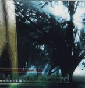

| Artist: | Martin Orford |
| Title: | Classical Music And Popular Songs |
| Label: | Giant Electric Pea GEP CD1026 |
| Length(s): | 49 minutes |
| Year(s) of release: | 2000 |
| Month of review: | [01/2001] |
| 1) | The Field Of Fallen Angels | 6.26 |
| 2) | A Part Of Me | 5.14 |
| 3) | Quilmes | 3.02 |
| 4) | The Days Of Our Lives | 6.15 |
| 5) | Fusion | 5.05 |
| 6) | The Final Solution | 5.59 |
| 7) | The Picnic | 1.21 |
| 8) | The Overload | 5.20 |
| 9) | Tatras | 5.30 |
| 10) | Evensong | 5.10 |